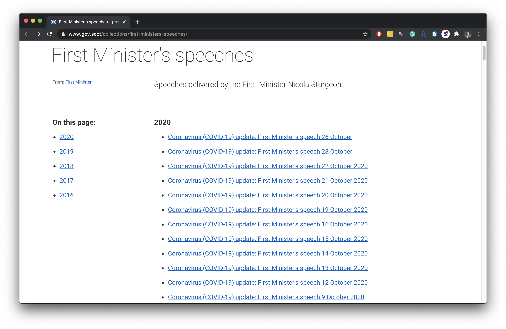
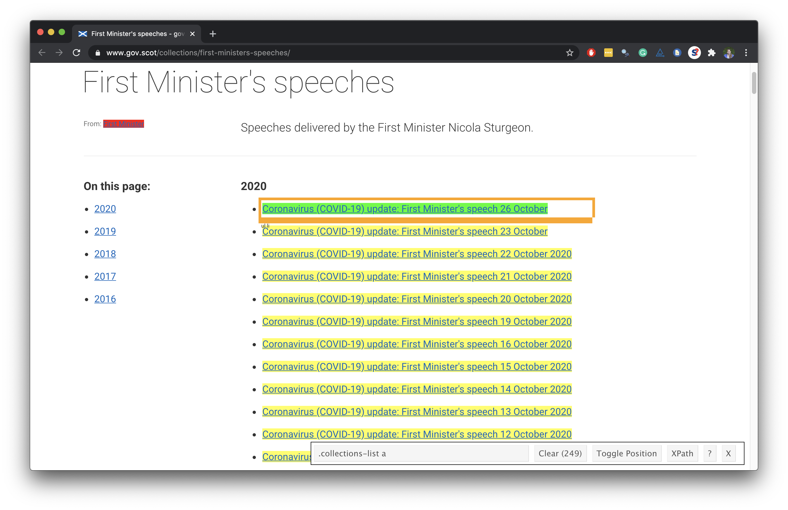

Iteration
Data Science in a Box
layout: true
class: middle
First Minister’s COVID speeches
🏁 Start with

End with 🛑
# A tibble: 218 x 6
title date locat~1 abstr~2 text url
<chr> <date> <chr> <chr> <chr> <chr>
1 Coronavirus (COVID-19)~ 2021-04-20 St And~ Statem~ "Goo~ http~
2 Coronavirus (COVID-19)~ 2021-04-13 St And~ Statem~ "Tha~ http~
3 Coronavirus (COVID-19)~ 2021-04-06 St And~ Statem~ "Goo~ http~
4 Coronavirus (COVID-19)~ 2021-03-30 St And~ Statem~ "Tha~ http~
5 Coronavirus (COVID-19)~ 2021-03-24 Scotti~ Statem~ "Tha~ http~
6 Coronavirus (Covid-19)~ 2021-03-23 The Sc~ Statem~ "Pre~ http~
7 Coronavirus (COVID-19)~ 2021-03-18 Scotti~ Statem~ "Tha~ http~
8 Coronavirus (COVID-19)~ 2021-03-17 St And~ Statem~ "\nG~ http~
9 Coronavirus (COVID-19)~ 2021-03-16 Scotti~ Statem~ "Pre~ http~
10 Coronavirus (COVID-19)~ 2021-03-15 St And~ Statem~ "\nG~ http~
11 Coronavirus (COVID-19)~ 2021-03-11 Scotti~ Statem~ "I c~ http~
12 Coronavirus (COVID-19)~ 2021-03-09 Scotti~ Statem~ "Pre~ http~
13 Coronavirus (COVID-19)~ 2021-03-05 Scotti~ Parlia~ "Hel~ http~
14 Coronavirus (COVID-19)~ 2021-03-04 Scotti~ Parlia~ "I w~ http~
15 Coronavirus (COVID-19)~ 2021-03-02 Scotti~ Statem~ "Pre~ http~
# ... with 203 more rows, and abbreviated variable names
# 1: location, 2: abstractDefine scrape_speech()
.pull-left-wide[ .small[]]
Use scrape_speech()
url_26_oct <- "https://www.gov.scot/publications/coronavirus-covid-19-update-first-ministers-speech-26-october/"
scrape_speech(url = url_26_oct)# A tibble: 1 x 6
title date location abstract text url
<chr> <date> <chr> <chr> <list> <chr>
1 <NA> NA <NA> <NA> <chr [47]> https://www.gov.scot~url_23_oct <- "https://www.gov.scot/publications/coronavirus-covid-19-update-first-ministers-speech-23-october/"
scrape_speech(url = url_23_oct)# A tibble: 1 x 6
title date location abstract text url
<chr> <date> <chr> <chr> <list> <chr>
1 <NA> NA <NA> <NA> <chr [134]> https://www.gov.sco~class: middle
Inputs
Inputs
.question[ You now have a function that will scrape the relevant info on speeches given the URL of the page of the speech. Where can we get a list of URLs of each of the speeches?]

All URLs
all_speeches_page <- read_html("https://www.gov.scot/collections/first-ministers-speeches/")
all_speeches_page %>%
html_nodes(".collections-list a") %>%
html_attr("href") [1] "/publications/motion-condolence/"
[2] "/publications/tribute-majesty-queen/"
[3] "/publications/programme-government-2022-2023-first-ministers-speech/"
[4] "/publications/scotwind-supply-chain-summit-first-ministers-speech/"
[5] "/publications/support-tech-scalers-first-ministers-speech-barclays-event-13-july-2022/"
[6] "/publications/royal-highland-show-first-ministers-speech-quality-meat-scotland-breakfast-event-24-june-2022/"
[7] "/publications/ministerial-statement-independence-referendum/"
[8] "/publications/gathering-first-ministers-speech-15-june-2022/"
[9] "/publications/scdi-forum-first-ministers-speech-13-june-2022/"
[10] "/publications/queens-platinum-jubilee-debate-first-ministers-statement/"
...COVID-19 URLs fragments
all_speeches_page %>%
html_nodes(".collections-list a") %>%
html_attr("href") %>%
str_subset("covid-19") [1] "/publications/coronavirus-covid-19-update-first-ministers-speech-tuesday-22-february-2022/"
[2] "/publications/coronavirus-covid-19-update-first-ministers-statement-8-february-2022/"
[3] "/publications/coronavirus-covid-19-update-first-ministers-statement-1-february-2022/"
[4] "/publications/coronavirus-covid-19-update-first-ministers-statement-25-january-2022/"
[5] "/publications/coronavirus-covid-19-update-first-ministers-statement-18-january-2022/"
[6] "/publications/coronavirus-covid-19-update-first-ministers-statement-11-january-2022/"
[7] "/publications/coronavirus-covid-19-update-first-ministers-statement-5-january-2022/"
[8] "/publications/coronavirus-covid-19-update-first-ministers-statement-21-december-2021/"
[9] "/publications/coronavirus-covid-19-update-first-ministers-speech-17-december-2021/"
[10] "/publications/coronavirus-covid-19-update-first-ministers-statement-14-december-2021/"
...COVID-19 URLs
all_speeches_page %>%
html_nodes(".collections-list a") %>%
html_attr("href") %>%
str_subset("covid-19") %>%
str_c("https://www.gov.scot", .) [1] "https://www.gov.scot/publications/coronavirus-covid-19-update-first-ministers-speech-tuesday-22-february-2022/"
[2] "https://www.gov.scot/publications/coronavirus-covid-19-update-first-ministers-statement-8-february-2022/"
[3] "https://www.gov.scot/publications/coronavirus-covid-19-update-first-ministers-statement-1-february-2022/"
[4] "https://www.gov.scot/publications/coronavirus-covid-19-update-first-ministers-statement-25-january-2022/"
[5] "https://www.gov.scot/publications/coronavirus-covid-19-update-first-ministers-statement-18-january-2022/"
[6] "https://www.gov.scot/publications/coronavirus-covid-19-update-first-ministers-statement-11-january-2022/"
[7] "https://www.gov.scot/publications/coronavirus-covid-19-update-first-ministers-statement-5-january-2022/"
[8] "https://www.gov.scot/publications/coronavirus-covid-19-update-first-ministers-statement-21-december-2021/"
[9] "https://www.gov.scot/publications/coronavirus-covid-19-update-first-ministers-speech-17-december-2021/"
[10] "https://www.gov.scot/publications/coronavirus-covid-19-update-first-ministers-statement-14-december-2021/"
...Save COVID-19 URLs
covid_speech_urls <- all_speeches_page %>%
html_nodes(".collections-list a") %>%
html_attr("href") %>%
str_subset("covid-19") %>%
str_c("https://www.gov.scot", .)
covid_speech_urls [1] "https://www.gov.scot/publications/coronavirus-covid-19-update-first-ministers-speech-tuesday-22-february-2022/"
[2] "https://www.gov.scot/publications/coronavirus-covid-19-update-first-ministers-statement-8-february-2022/"
[3] "https://www.gov.scot/publications/coronavirus-covid-19-update-first-ministers-statement-1-february-2022/"
[4] "https://www.gov.scot/publications/coronavirus-covid-19-update-first-ministers-statement-25-january-2022/"
[5] "https://www.gov.scot/publications/coronavirus-covid-19-update-first-ministers-statement-18-january-2022/"
[6] "https://www.gov.scot/publications/coronavirus-covid-19-update-first-ministers-statement-11-january-2022/"
[7] "https://www.gov.scot/publications/coronavirus-covid-19-update-first-ministers-statement-5-january-2022/"
[8] "https://www.gov.scot/publications/coronavirus-covid-19-update-first-ministers-statement-21-december-2021/"
[9] "https://www.gov.scot/publications/coronavirus-covid-19-update-first-ministers-speech-17-december-2021/"
[10] "https://www.gov.scot/publications/coronavirus-covid-19-update-first-ministers-statement-14-december-2021/"
...class: middle
Iteration
Define the task
- Goal: Scrape info on all COVID-19 speeches of the First Minister
- So far:
scrape_speech(covid_speech_urls[1])
scrape_speech(covid_speech_urls[2])
scrape_speech(covid_speech_urls[3])- What else do we need to do?
- Run the
scrape_speech()function on all COVID-19 speech links - Combine the resulting data frames from each run into one giant data frame
- Run the
Iteration
.question[ How can we tell R to apply the scrape_speech() function to each link in covid_speech_urls?]
–
Option 1: Write a for loop, i.e. explicitly tell R to visit a link, apply the function, store the result, then visit the next link, apply the function, append the result to the stored result from the previous link, and so on and so forth.
Option 2: Map the function to each element in the list of links, and let R take care of the storing and appending of results.
- We’ll go with Option 2!
How does mapping work?
Suppose we have exam 1 and exam 2 scores of 4 students stored in a list…
exam_scores <- list(
exam1 <- c(80, 90, 70, 50),
exam2 <- c(85, 83, 45, 60)
)–
…and we find the mean score in each exam
map(exam_scores, mean)[[1]]
[1] 72.5
[[2]]
[1] 68.25…and suppose we want the results as a numeric (double) vector
map_dbl(exam_scores, mean)[1] 72.50 68.25…or as a character string
map_chr(exam_scores, mean)[1] "72.500000" "68.250000"map_something
Functions for looping over an object and returning a value (of a specific type):
map()- returns a listmap_lgl()- returns a logical vectormap_int()- returns a integer vectormap_dbl()- returns a double vectormap_chr()- returns a character vectormap_df()/map_dfr()- returns a data frame by row bindingmap_dfc()- returns a data frame by column binding- …
Go to each page, scrape speech
- Map the
scrape_speech()function - to each element of
covid_speech_urls - and return a data frame by row binding
covid_speeches <- map_dfr(covid_speech_urls, scrape_speech)covid_speeches %>%
print(n = 15)# A tibble: 218 x 6
title date locat~1 abstr~2 text url
<chr> <date> <chr> <chr> <chr> <chr>
1 Coronavirus (COVID-19)~ 2021-04-20 St And~ Statem~ "Goo~ http~
2 Coronavirus (COVID-19)~ 2021-04-13 St And~ Statem~ "Tha~ http~
3 Coronavirus (COVID-19)~ 2021-04-06 St And~ Statem~ "Goo~ http~
4 Coronavirus (COVID-19)~ 2021-03-30 St And~ Statem~ "Tha~ http~
5 Coronavirus (COVID-19)~ 2021-03-24 Scotti~ Statem~ "Tha~ http~
6 Coronavirus (Covid-19)~ 2021-03-23 The Sc~ Statem~ "Pre~ http~
7 Coronavirus (COVID-19)~ 2021-03-18 Scotti~ Statem~ "Tha~ http~
8 Coronavirus (COVID-19)~ 2021-03-17 St And~ Statem~ "\nG~ http~
9 Coronavirus (COVID-19)~ 2021-03-16 Scotti~ Statem~ "Pre~ http~
10 Coronavirus (COVID-19)~ 2021-03-15 St And~ Statem~ "\nG~ http~
11 Coronavirus (COVID-19)~ 2021-03-11 Scotti~ Statem~ "I c~ http~
12 Coronavirus (COVID-19)~ 2021-03-09 Scotti~ Statem~ "Pre~ http~
13 Coronavirus (COVID-19)~ 2021-03-05 Scotti~ Parlia~ "Hel~ http~
14 Coronavirus (COVID-19)~ 2021-03-04 Scotti~ Parlia~ "I w~ http~
15 Coronavirus (COVID-19)~ 2021-03-02 Scotti~ Statem~ "Pre~ http~
# ... with 203 more rows, and abbreviated variable names
# 1: location, 2: abstractWhat could go wrong?
covid_speeches <- map_dfr(covid_speech_urls, scrape_speech)- This will take a while to run
- If you get
HTTP Error 429 (Too many requests)you might want to slow down your hits by modifying your function to slow it down by adding a random wait (sleep) time between hitting each link
scrape_speech <- function(url){
# Sleep for randomly generated number of seconds
# Generated from a uniform distribution between 0 and 1
Sys.sleep(runif(1)) #<<
# Rest of your function code goes here...
}